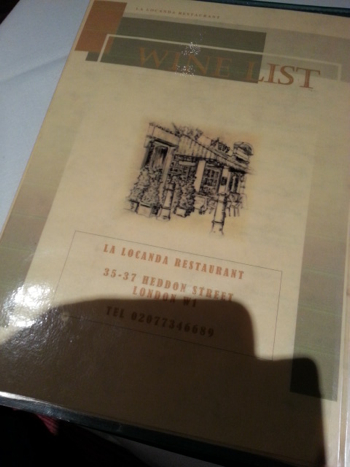
리젠트스트릿 걷다가 골목안으로 들어가면 있는 이탈리안
제일 첨 가본것은 Maidstone서 학교다닐때
엄청 맛나거나 한건 아닌데
15-16파운드에 3코스로 먹고싶을때 가끔 놀러간다^^;;
한국/일본인 단체 관광객이 와서 식사하는것도 가끔 볼수있음
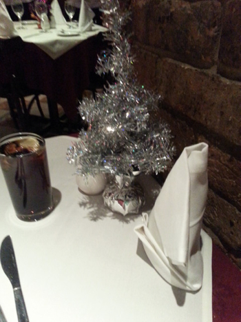
벌써 12월;;;
사방이 크리스마스네 크리스마스야~
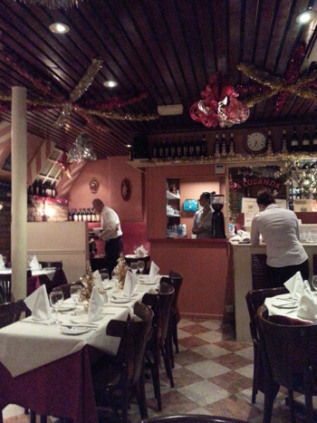
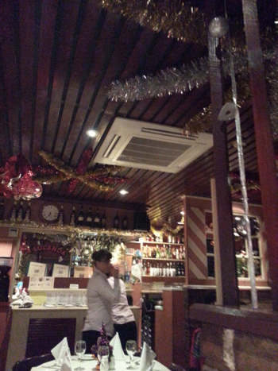
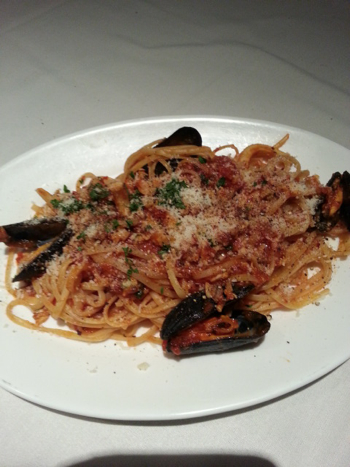
심지어 스타터랑 디저트는 사진도없어
파스타는 뭘 골라도 썩 괜찮습니다 헐헐//
좋아하는 메뉴는
Spagheti alle Vongole
(clam, garlic and tomato sauce)
Linguine del Pescatore
(Thin spaghetti with shrimps, clams, mussels in a tomato sauce)
Paglia e Fieno 'Cabina' *요거추천 +_+
(Green and white noodle with prawns, lobster and fresh salmon)
이날먹은건 두번째 메뉴 :)
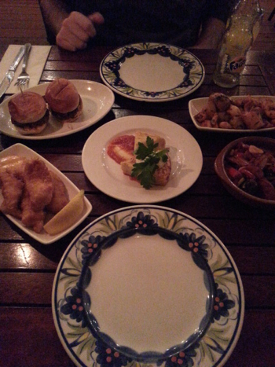
요건 Spanish Tapas Restaurant
La Tasca
체인이라 여기저기 많이보입니당
여기도 가끔 찾아가는곳 :)
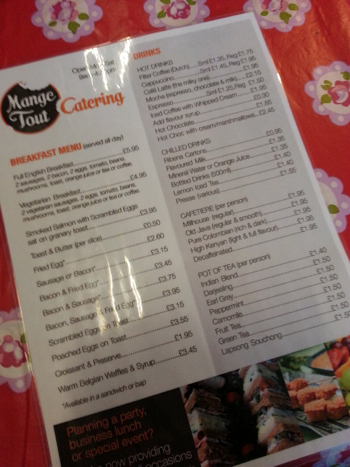
요건 Stony Stratford에 있는
Mange Tout
이동네 정말 귀여웁
Old English town인데 동네 가게도 길거리도 무진장 귀엽다//
이날 크리스마스 랜턴 페스티벌 구경하러 갔다가 들렸음
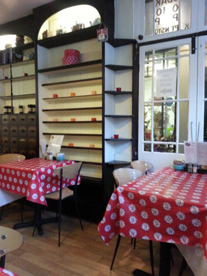
딱 동네 조그만 찻집
주말에 가족/노부부들 밥먹으로 오는곳
가게안도 넘 귀여워 ;ㅂ;
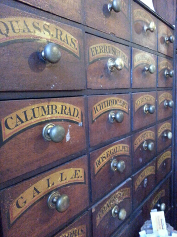
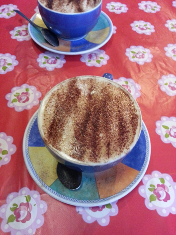
카푸치노 한잔에 £1.45
싸다 ㅜㅜ 훈늉하다 ㅜㅜ 흑흑
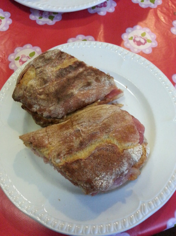
브리&베이컨 파니니
원래 치즈 별로 안좋아했는데
작년부터 완전 자주먹고있는 브리///헷헷
그중에서도 브리&크렌베리 궁합이 넘 좋다
11월의 먹방 끗!!